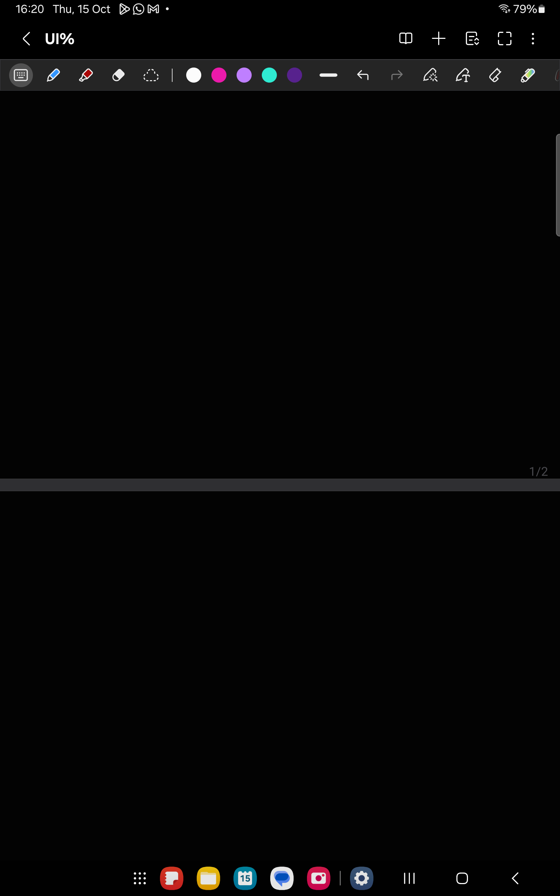
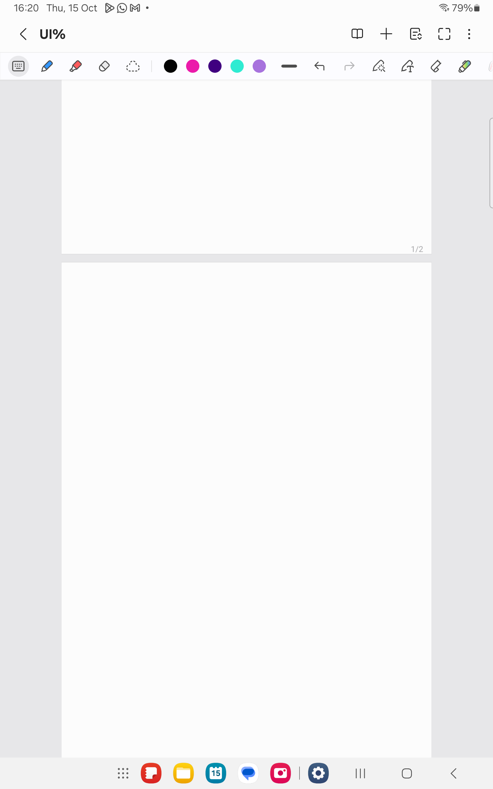
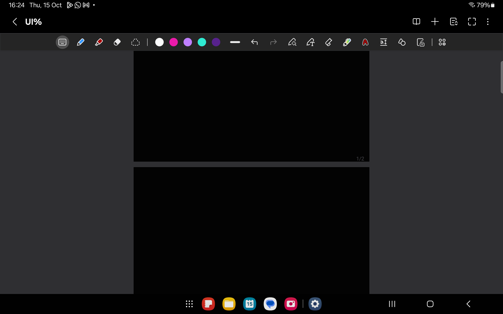
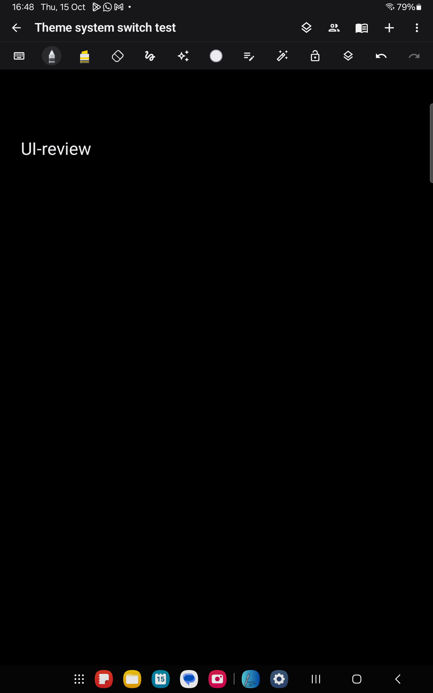
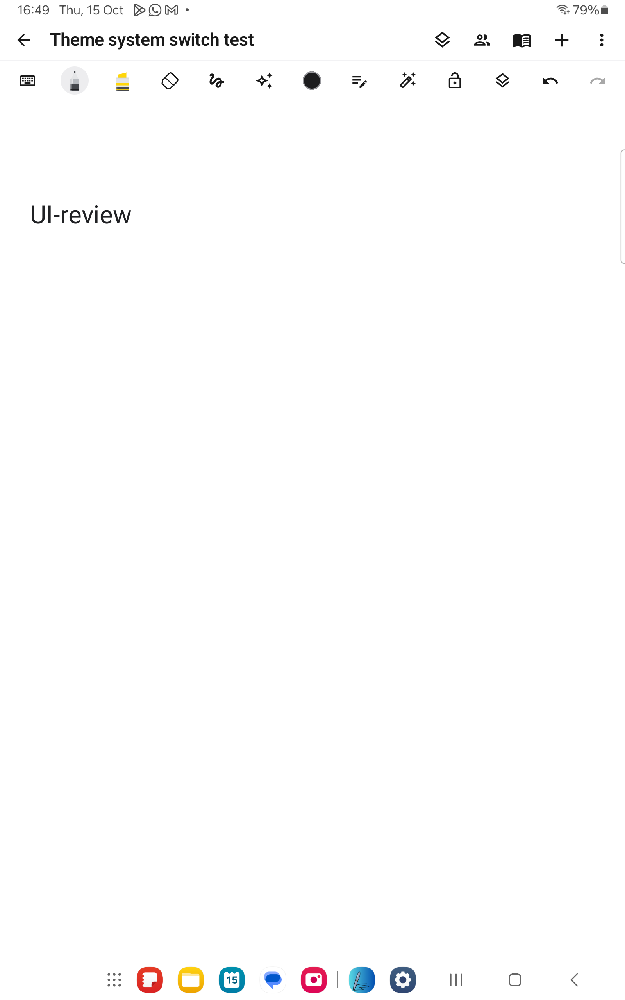
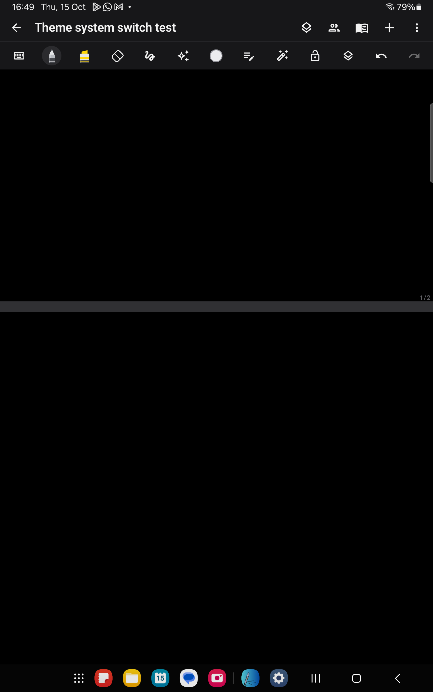
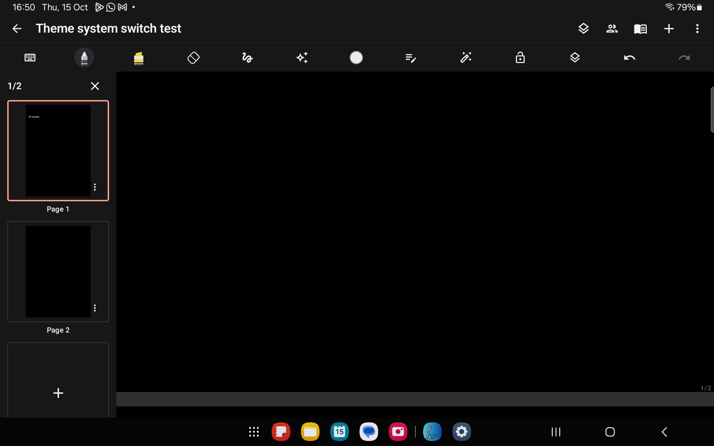

Latest update: Notes 1.6 fixes uneven-finger page creation, adds momentum scrolling and S Pen finger-scroll defaults.
The connected Galaxy Tab (SM-T733) was used to inspect Samsung Notes directly, using a temporary blank note. Existing Samsung notes were not edited. The tablet had version 1.0 of our app installed before this review.
| Observed in Samsung Notes | Implemented in this update |
|---|---|
| The note body and controls follow system light/dark mode. | Neutral paper, handwriting, rich text, editable text, previews and pen previews adapt to the active theme. The default follows the device setting; explicit Light/Dark settings remain available. Theme changes keep the current editor open. Display adaptation does not rewrite stored strokes, shared ink or export colours. Photos, PDF content and explicitly coloured paper retain their content colours. |
| At 100%, paper fills the available editor width. Zooming out exposes centred paper and narrow gaps. | Removed the previous 720dp width cap and initial margins. New blank portrait pages fill the initial writing viewport where needed; subsequent pages inherit their size. A document smaller than the viewport is centred. Zoom is bounded to 75–600%; the tablet directly demonstrated the 75% floor. The zoom indicator fades after a short interval. |
| An upward scroll past the end creates another individual page. There is no large canvas Add page footer. | The canvas footer button is removed. An intentional upward end pull previews a matching blank page and commits it on lift as one undoable operation. A late second finger can cancel that provisional page by turning the gesture into a pinch. Pinching and reading-mode scrolling never append pages. Manual creation remains in Insert and the page sorter. |
| The tablet handwriting toolbar is above the page, and its page sorter opens beside the document. | Tablet layouts place handwriting controls below the header and use a side page sorter with miniature content, add, duplicate, reorder and delete controls. Phone layouts retain a compact bottom toolbar and a page overview sheet. Selection, image editing and the writing pad remain available. |
| Multiple pages scroll as one document. | Page coordinates stay local in storage while the viewport navigates the vertical stack. Appending does not jump the camera to the new page. Undoing a page removal keeps the remaining document reachable. Retained page layers and bounded text-layout caches remain in use. |
These screenshots show only the temporary reference note created for this inspection. That note was subsequently moved to the Recycle bin. The tablet's original dark-mode and automatic rotation settings were restored.



Installed as Notes Preview 1.5 (in.innovaticshub.notepad.preview) alongside the original app. Android rejected an in-place update because the old app's signing certificate differs from the available debug keys. The original v1.0 app and its notes remain intact; Preview uses separate storage. Its review note contains two pages, and repeated physical-device pinch gestures left it at two pages with zero ink strokes.




All 75 checks passed: 21 JVM tests and 54 Android tests. The final Android run used the dedicated emulator with clean test-app storage, including all three local TLS/WebSocket collaboration tests. Coverage includes live system theme changes without closing the editor, rendered paper/ink contrast, unchanged stored content, one- and two-finger page creation, undo/redo, late-finger pinch cancellation, bounded zoom and centred paper, pressure/palm input, text/ink editing, saving/reopening, exports, image editing and the writing pad. Lint: 0 errors, 77 warnings. Logs: build-ui-live-complete.log and build-ui-live-verified-tests.log (local ignored artifacts).
The installed Preview build was also checked on the physical Galaxy Tab: the same note switched automatically between dark and light, an upward two-finger scroll created page 2, and the landscape side sorter worked. Three repeated pinch gestures kept the saved review document at exactly two pages and zero strokes. The physical tablet's original app data was not cleared.
Installed Preview APK: C:\Users\vardh\AndroidStudioProjects\Notepad\app\build\outputs\apk\device-preview\notes-preview.apk, version 1.5 (21). SHA256: 53207CF8D9485F20B67CB5FF5938288BD04EADC0130809C937BA00BAD89781ED.
Normal package APK: C:\Users\vardh\AndroidStudioProjects\Notepad\app\build\outputs\apk\debug\app-debug.apk. SHA256: 94369CEAA73F9588CA78E140162F07B1CC5CA3DBF8A4E10A12B5CB421A63A882. The optional build flag -PdevicePreview=true produces the separate Preview package; normal builds retain the original application ID.
Collaboration retains the existing endpoint, message types, room controls and ink synchronization. It remains ink-only; this update does not add collaborative text, images or PDF backgrounds.
Official references: Samsung Notes features and settings, Organize notes and PDFs, and Samsung's Notes update and zoom range. The observed tablet behaviour took priority over assumptions from earlier screenshots.